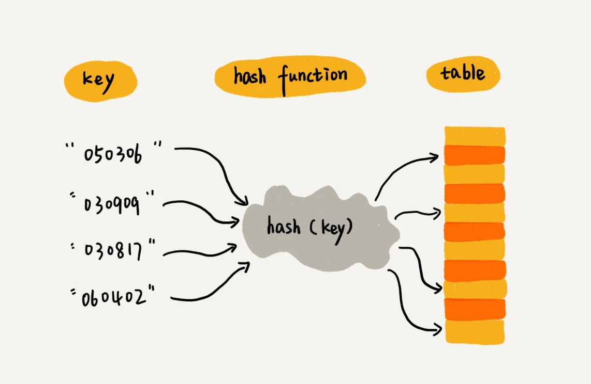
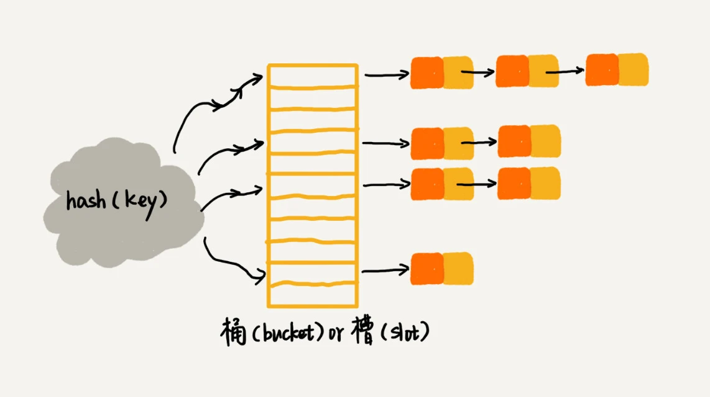

今天来学一下散列表（上）。
散列思想
散列表的英文是Hash Table，所以也叫做“哈希表”或者“Hash表”。
散列表用的是数组支持按照下标随机访问数据的特性，所以散列表其实就是数组的一种扩展，由数组演化而来。可以说，如果没有数组，就没有散列表。
文中举了一个例子来说明散列思想。假如学校有89名选手参加学校运动会。为了方便记录成绩，每个选手胸前都会贴上自己的参赛号码。参赛号码的规则如下，用6位数字来表示，比如051167，其中，前两位05表示年级，中间两位11表示班级，最后两位67代表第67位选手。通过截取参赛编号的最后两位作为数组下标，来存取选手信息数据。当通过参赛编号查询选手信息的时候，取参赛编号的后两位，作为数组下标，来读取数组中的数据。
这就是典型的散列思想。其中，参赛选手的编号叫做键或者关键字。把参赛编号转化为数组下标的映射方法就叫做散列函数（或者“Hash函数”“哈希函数”），例子中的散列函数就是截取参赛编号的最后两位。而散列函数计算得到的值就叫做散列值（或“Hash值”“哈希值”），例子中的散列值就是选手信息数据。

规律：散列表用的就是数组支持下标随机访问，时间复杂度为\(O(1)\)的特性。通过散列函数把元素的键值映射为下标，然后将数据存储在数组中对应下标的位置。当按照键值查询元素时，再用同样的散列函数，将键值转化为数组下标，从对应的数组下标的位置取元素。
那么问题，如果利用散列函数映射的下标，已经被其它值占用了，怎么办？emm...散列冲突。
散列函数
散列函数，顾名思义，是一个函数。可以定义为hash(key)，其中key表示元素的键值，hash(key)的值表示经过散列函数计算得到的散列值。
散列函数设计的基本要求：
- 散列函数计算得到的散列值是一个非负整数。
- 如果
key1=key2，那么hash(key1)==hash(key2)。 - 如果
key1\(\neq\)key2，那么hash(key1)\(\neq\)hash(key2)。
真实的情况下，要想找到一个不同的key对应的散列值都不一样的散列函数，几乎是不可能的。即便像业界著名的MD5、SHA、CRC等哈希算法，也无法完全避免这种散列冲突。而且，因为数组的存储空间有限，也会加大散列冲突的概率。
所以几乎无法找到一个完美的无冲突的散列函数，即便能找到，付出的时间成本、计算成本也是很大的。所以针对散列冲突问题，需要通过其他途径来解决。
散列冲突
开放寻址法
核心思想：如果出现了散列冲突，就重新探测一个空闲位置，将其插入。
比较经典的探测方法，线性探测、二次探测、双重散列。
线性探测
当往散列表中插入数据时，如果某个数据经过散列函数散列之后，存储位置已经被占用了，就从当前位置开始，依次往后查找，看是否有空闲位置，直到找到为止。
在散列表中查找元素的过程类似插入过程。通过散列函数求出要查找元素的键值对应的散列值，然后比较数组中下标为散列值的元素和要查找的元素。如果相等，则说明就是要找的元素；否则就顺序往后依次查找。如果遍历到数组中的空闲位置，还没有找到，就说明要查找的元素并没有在散列表中。这里数组中存储的值，不仅存储了目标值，还存储了对应求解hash时的key。
对于使用线性探测法解决冲突的散列表，不能单纯地把要删除的元素设置为空。因为在查找的时候，通过线性探测方法，找到一个空闲位置，就说明查找的元素没有在散列表中，但是，如果这个空闲位置是后来删除的，就会导致原来的查找算法失效。本来存在的数据，会被认定为不存在。可以将删除的元素，特殊标记为delted。当线性探测查找的时候，遇到标记为deleted的空间，并不是停下来，而是继续往下探测。
当散列表中插入的数据越来越多时，散列冲突发生的可能性就会越来越大，空闲位置会越来越少，线性探测的时间就会越来越久。极端情况下，可能需要探测整个散列表，所以最坏情况下的时间复杂度是\(O(n)\)。
二次探测
线性探测每次探测的步长是1，那探测的下标序列就是hash(key)+0、hash(key)+1、hash(key)+2...而二次探测的步长就变成了原来的“二次方”，探测的下标序列为hash(key)+0、hash(key)+\(1^2\)、hash(key)+\(2^2\)...
双重散列
使用一组散列函数hash1(key)、hash2(key)、hash3(key)...先用第一个散列函数，如果计算得到的存储位置已经被占用，再用第二个散列函数，依次类推，直到找到空闲的存储位置。
不管采用哪种探测方法，当散列表中空闲位置不多的时候，散列冲突的概率就会大大提高。为了尽可能保证散列表的操作效率，一般情况下，尽可能会保证散列表中有一定比例的空闲槽位。通过装载因子来表示空位的多少。
装载因子的计算公式是：散列表的装载因子=填入表中的元素/散列表的长度。装载因子越大，说明空闲位置越少，冲突越多，散列表的性能会下降。
链表法
链表法是一种更加常用的散列冲突解决方法，相比开放寻址法，要简单很多。在散列表中，每个“桶”或者“槽”会对应一条链表，所有散列值相同的元素都放到相同槽位对应的链表中。

当插入的时候，只需要通过散列函数计算出对应的散列槽位，将其插入到对应链表中，所以插入的时间复杂度为\(O(1)\)。当查找、删除一个元素时，通过散列函数计算出对应的槽，然后遍历链表查找或者删除。时间复杂度跟链表的长度k成正比，即\(O(k)\)。对于散列比较均匀的散列函数来说，理论来讲，k=n/m，其中n代表散列中数据的个数，m表示散列表中“槽”的个数。
解答开篇
Word文档中单词拼写检查功能是如何实现的？
常见的英文单词有20万个左右，假设单词的平均长度是10个字母，平均一个单词占用10个字节的内存空间，那20万英文单词大约占2MB的存储空间，对于现代计算机来说，这个大小完全可以放在内存里面。所以可以用散列表来存储整个英文单词词典。
当用户输入某个英文单词时，拿用户输入的单词去散列表中查找。如果查到，则说明拼写正确；如果没有查到，说明拼写可能有误，给予提示。
课后思考
假设有10w条
URL访问日志，如果按照访问次数给URL排序？评论区大佬实在是太多了，自己也想到了散列函数中的链表法，但不够全面。
原答案：将10w条访问日志存入散列表，其中
key为URL，value初始值为0。当第一条URL存入散列表，再有相同的URL存入会产生散列冲突。此时，再比较key是否相同。如果key相同，则是同一个URL，将相应的value++；如果key不相同，则存入链表下一个位置。可以在外部将最大值K记录下来。插入完成后，就可以取得当前URL的出现次数范围0-K。根据K的大小选取相应的算法。如果K值不大，可以采用桶排序。如果K值很大，可以采用快速排序。为什么使用散列表进行存储：散列表存储完成以后，已经对
URL完成了去重操作，同时拿到了最大次数K，根据K选择合适的排序算法。时间复杂度分析：10w条
URL存入散列表，时间复杂度为\(O(n)\)。桶排序，时间复杂度为\(O(n)\)。快速排序，时间复杂度\(O(nlogn)\)。有两个字符串数组，每个数组大约有10万条字符串，如何快速找出两个数组中相同的字符串？
以第一个字符串数组构建散列表，
key为字符串，value为出现次数。再遍历第二个字符串数组，以字符串为key在散列表中查找，如果value大于0，则说明存在相同字符串，时间复杂度为\(O(n)\)。这个答案是建立在字符串数组中没有重复字符串的情况之上，如果字符串数组本身存在重复字符串，应该比较value值是否发生了改变，如果value发生了改变，则说明存在相同字符串。